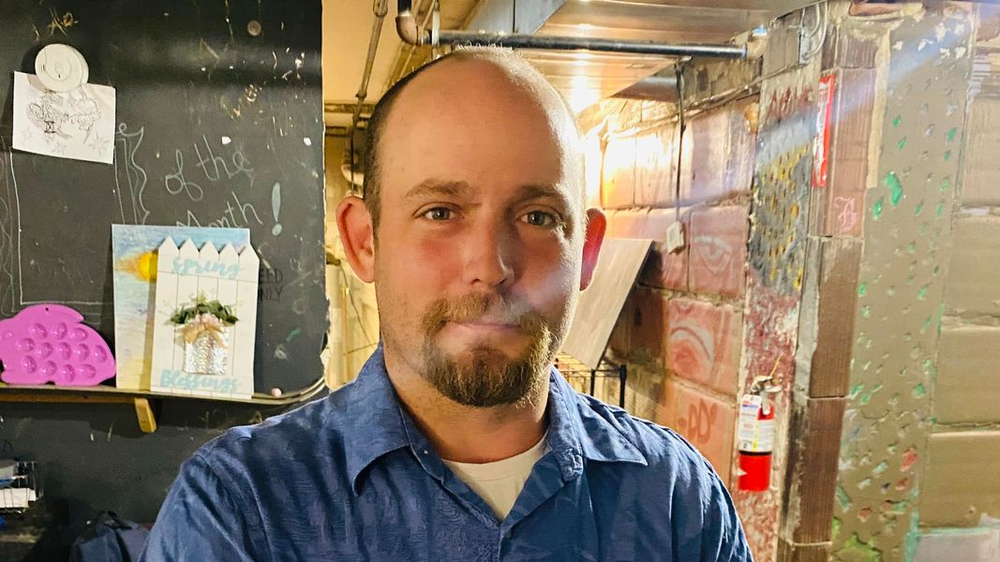

Mobile uploads
I’d like you to meet Dan. Some of his friends call him Cowboy.
Dan is one of these people that you look at and wonder why he’s homeless. But he is homeless. He’s lived in a tent for most of the last 5 years.
He has a job at Serv-Ice. And he’s had it for over 4 years. He took a break about 2 years ago to try to make a new life in Florida. Hurricane Ian had other plans. All the temp work Dan was doing instantly dried up.
He eventually moved back to Ohio and went back to work at Serv-Ice. He also moved back into a tent. That was about 2 years ago.
Dan makes a little over $30,000 a year. I’ve seen his W-2. But the work is seasonal. Sometimes he works a lot. Sometimes he doesn’t work as much.
He never could save enough for the down payment and first month’s rent. Until this month.
Dan’s boss gave him a $1300 loan. Dan is now in a 2 bedroom 1 bath apartment for $650/month.
If anyone can make this work, it’s Dan.
This story is important for many reasons.
Dan is not typical of the people I work with. Can you imagine sleeping in a tent, having no access to running water, a toilet or a vehicle… and making it to work on time (usually early) for YEARS!?
That’s super human.
I always get nervous about these transitions. Living in a house is its own form of difficulty. Bills, isolation, cramped quarters. His apartment is 600 square feet.
But I’ve definitely seen it happen over and over again. It’s definitely possible.
Just the same, moving from a free and open tent lifestyle that you’ve done for years, to a small apartment lifestyle is fraught with pitfalls.
One issue Dan is dealing with right now is a complete lack of furniture. He literally has nothing.
He doesn’t have a large amount of space. But if you have anything like a table, lamps, chairs, bed, and other stuff like that, Dan would be truly grateful.
He also needs a microwave and a toaster.
If you have any of those things laying around, could you let me know? I’d love to get these things for Dan.
Dan has always wowed me. He’s truly awe inspiring.
But Dan’s boss at Serv-Ice also can’t be neglected in this story. I saw the $1300 in cash that was loaned to Dan. In all my time doing this, I’ve never seen a business owner go out of his way like that to help an employee. That’s huge. (I also hear he is hiring, if anyone is looking for a job.)
I truly believe no one is self-made. The “self-made man” is a total fantasy. I’m living proof of that reality. I would be nothing without constant help from the community throughout my entire life.
If you have some of those items Dan needs please let me know.
Thank you, as always, for everything.